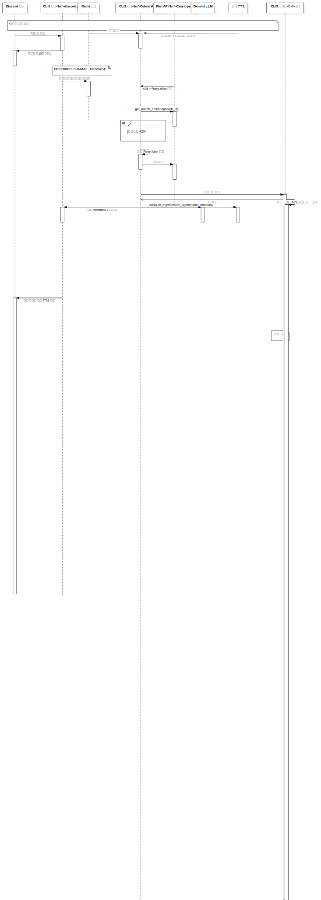

Interaction by Mermaid
UMLInteraction
Untitled
::
Collaboration by Mermaid
::
Interaction by Mermaid
Description
none
Diagrams

Sequence Diagram by Mermaid
Fragments
(CombinedFragment)
Participants
Discord 用户
CLI1 前端<br/>discord.py
Redis 队列
CLI2 后端<br/>Celery Worker
Riot API<br/>Cassiopeia
Gemini LLM
豆包 TTS
CLI3 观察者<br/>监控
Messages
任务通知 (Redis 队列→CLI2 后端<br/>Celery Worker)
分析结果 + 情绪标签 (Gemini LLM→CLI2 后端<br/>Celery Worker)
音频流 (豆包 TTS→CLI2 后端<br/>Celery Worker)
/讲道理 命令 (Discord 用户→CLI1 前端<br/>discord.py)
延迟回复 (3秒窗口) (CLI1 前端<br/>discord.py→Discord 用户)
任务入队（包含交互令牌） (CLI1 前端<br/>discord.py→Redis 队列)
429 + Retry-After 头部 (Riot API<br/>Cassiopeia→CLI2 后端<br/>Celery Worker)
MatchTimeline 数据 (Riot API<br/>Cassiopeia→CLI2 后端<br/>Celery Worker)
get_match_timeline(match_id) (CLI2 后端<br/>Celery Worker→Riot API<br/>Cassiopeia)
根据 Retry-After 等待 (CLI2 后端<br/>Celery Worker→CLI2 后端<br/>Celery Worker)
重试请求 (CLI2 后端<br/>Celery Worker→Riot API<br/>Cassiopeia)
记录性能指标 (CLI2 后端<br/>Celery Worker→CLI3 观察者<br/>监控)
已确认 (CLI3 观察者<br/>监控→CLI2 后端<br/>Celery Worker)
追踪 API 速率限制 (CLI3 观察者<br/>监控→CLI3 观察者<br/>监控)
监控 Redis 队列深度 (CLI3 观察者<br/>监控→CLI3 观察者<br/>监控)
分析 llm_debug_wrapper 日志 (CLI3 观察者<br/>监控→CLI3 观察者<br/>监控)
通过 webhook 更新结果 (CLI2 后端<br/>Celery Worker→CLI1 前端<br/>discord.py)
synthesize_speech(text, emotion) (CLI2 后端<br/>Celery Worker→豆包 TTS)
analyze_match(timeline_data) (CLI2 后端<br/>Celery Worker→Gemini LLM)
在语音频道播放 TTS 音频 (CLI1 前端<br/>discord.py→Discord 用户)
发送分析结果 + 加入语音频道 (CLI1 前端<br/>discord.py→Discord 用户)
Properties
Name
Value
name
Interaction by Mermaid
stereotype
null
visibility
public
isReentrant
true
Owned Elements
Sequence Diagram by Mermaid